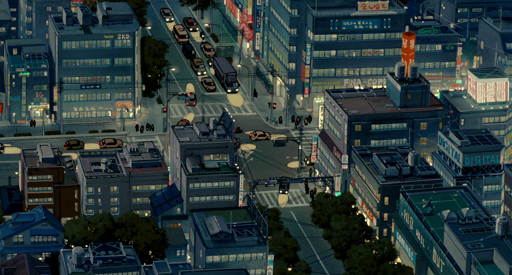

Unimaginative sequences
defines my usual encounters,
but I've never look for anything profounder
Though the events were unvarying
and some were exhausting,
I didn't mind adhering to its plodding monotony
but there you were, sat next to me
a sweet anomaly,
like a pause from a fast melody